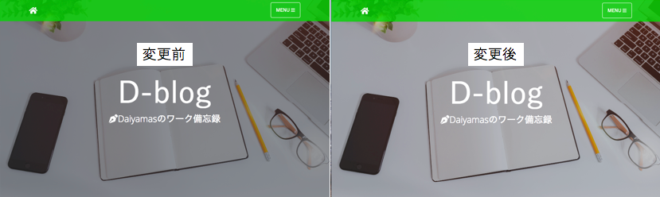
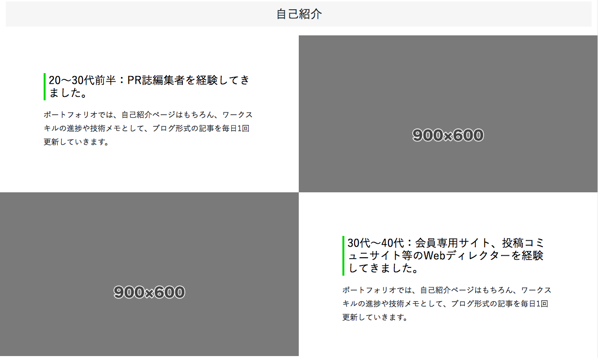
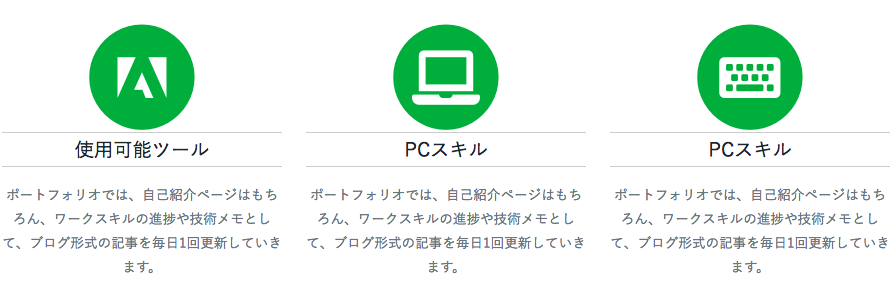
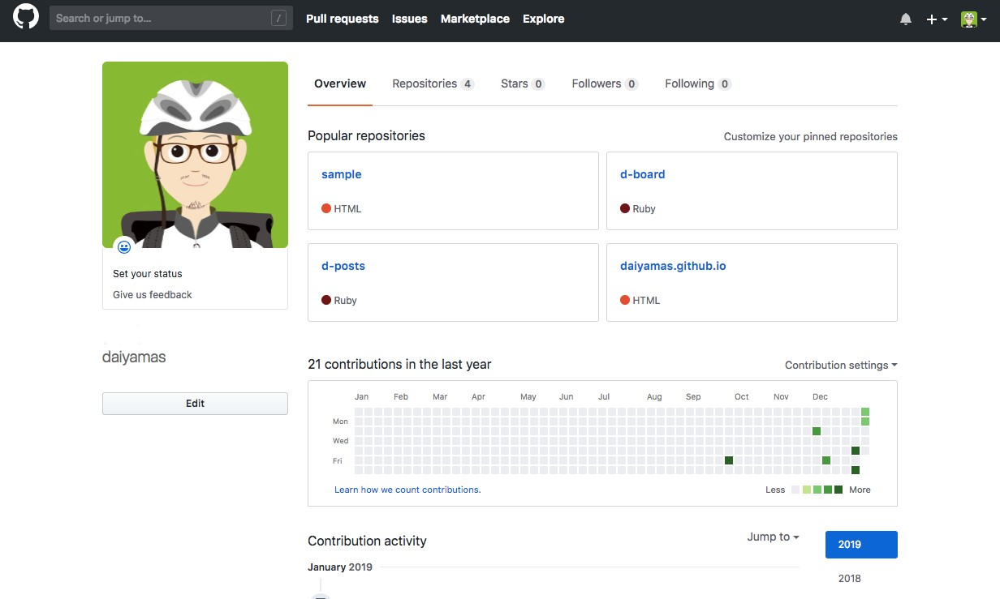

「メイン画像が暗い」印象だったのを解消しました。
本ブログでベースに使用しているBootstrapテーマ「Clean Blog」は、 キービジュアル上に太いフォントの見出しを配置するレイアウト設定がされていました。 しかしカスタマイズしていく中で、サイトで使用する見出しのフォントは細めに変更し、 ビジュアルもしっかり認識できるように変更する必要が出てきました。
デベロッパーツールで調べてみたところ、キービジュアルの領域header.mastheadクラスには background-color（#212529）とOpacity（0.5）の設定が入っていました。 Opacityの設定を0.5→0.3に変更することで、画像の上に表示される文字とぶつからない程度に、 キービジュアルを明るく設定することができました。
header.masthead .overlay {
position: absolute;
top: 0;
left: 0;
height: 100%;
width: 100%;
background-color: #212529;
opacity: 0.5;
}
header.masthead .overlay {
position: absolute;
top: 0;
left: 0;
height: 100%;
width: 100%;
background-color: #212529;
opacity: 0.3;
}
自己紹介ページをTOPページ内に配置してみました。
先日見直しを行ったTOPページの構成要素のひとつ「自己紹介」のコンテンツを実際に TOPページ内に配置してみました。 具体的には下記2種類のコンポーネントを配置してみました。
1.「画像と見出し・テキスト」の組み合わせからなる2カラムのコンポーネント 
2.「オーサムアイコンと見出し・テキスト」の組み合わせからなる3カラムのコンポーネント 
上記1では、自分自身の簡単な経歴を、2では業務上得意とする事柄について簡単に 紹介していきたいと考えています。現状では、コンポーネントを配置しただけなので、 ページ全体とのバランスや細部の設定などを引き続きブラッシュアップしていきます。
ヘッダ内のGithubアイコンにGithubへのリンク設定を行いました。
ワークスキルの完成要件にある、D-boardとD-postは、すでに自分のGithub内にコミット、 プッシュ済みです。ページへのリンクは本ブログのヘッダにあるGithubのアイコンに設定を入れています。 リンク設定は別ページで開くよう下記ソースの通り記述しています。
<li class="list-inline-item">
<a href="https://github.com/daiyamas" target="_blank">
<span class="fa-stack fa-lg">
<i class="fas fa-circle fa-stack-2x"></i>
<i class="fab fa-github fa-stack-1x fa-inverse"></i>
</span>
</a>
</li>